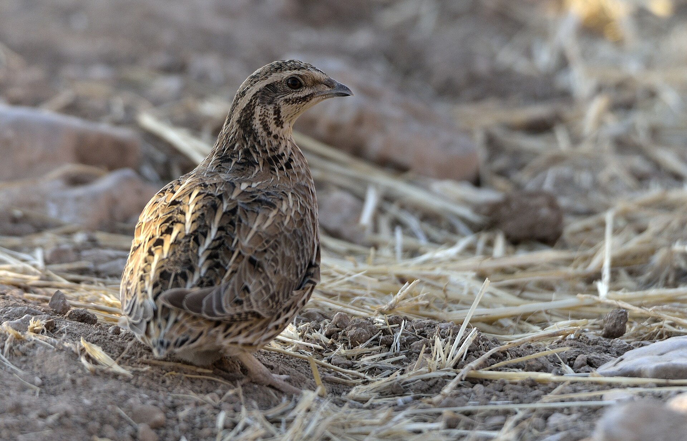
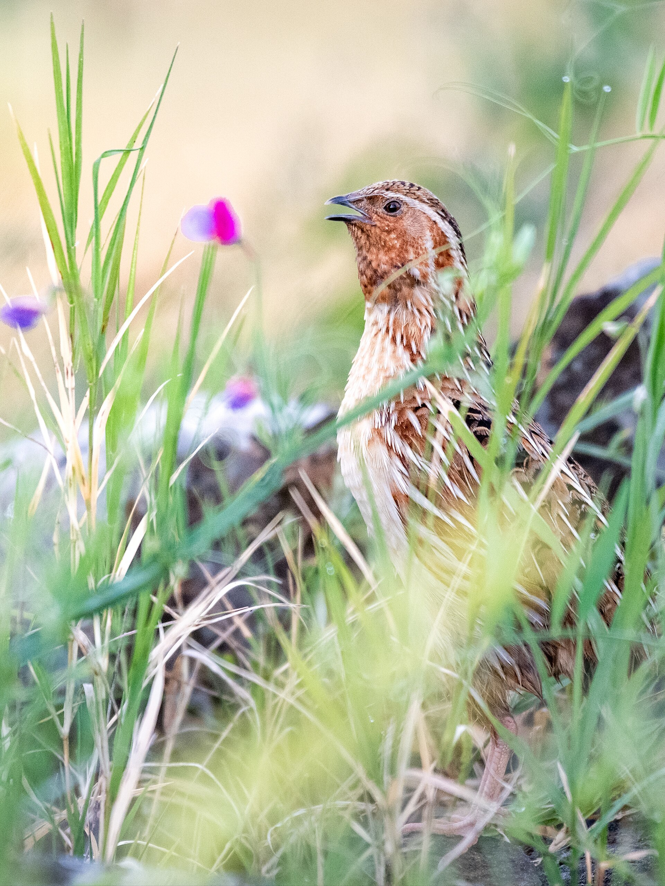

Range: A small ground bird of the pheasant family, heard more often than seen. It breeds across Europe, North Africa, and western Asia, and winters in sub-Saharan Africa and parts of southern Asia. Lebanon and the Levant form a key autumn and spring passage corridor; it hides in cereal fields, pastures, and dense grass, and rarely flies except in short low bursts before dropping back into cover.
Life cycle and habitat: Males usually reach breeding grounds ahead of females. The female scrapes a shallow nest on the ground, lined with a little plant material, and typically lays between 8 and 13 eggs, incubating them alone for about 17–20 days. The chicks are precocial: they leave the nest soon after hatching and feed themselves, with the mother brooding them in the first weeks. Plumage is nearly complete by about day 19. It prefers open habitats with enough grass cover to hide in, and avoids dense forest; its diet is grass seeds, fallen grain, and insects and their larvae.
Lifestyle: Secretive and terrestrial; it creeps more than it flies. The male’s short, repeated call is heard at dawn and dusk—and sometimes at night—while the bird itself stays hidden among the stalks. Much of the migration is nocturnal. Its wings are relatively longer than those of many ground gamebirds, matching a true long-distance migrant rather than a local wanderer. Outside the breeding season it may gather in small groups on passage or in winter. It should not be confused with the Japanese quail Coturnix japonica despite superficial likeness; each has a distinct call and core range.


Hunting status: Across Arab countries, hunting common quail is generally prohibited unless a specific state issues an official seasonal decree that expressly lists it. In Lebanon, Wild Hunting Law No. 580/2004 limits hunting to quarry species set by the minister; everything else is protected year-round; common quail is not among the permitted quarry in the absence of a current open-season decision.
Conservation status: Globally Least Concern with the International Union for Conservation of Nature. In Europe it is assessed regionally nearer Near Threatened because of declines linked to intensive farming and hunting on flyways—a regional context, not a substitute for the global listing.
Traits: A bird “heard, not seen”: the male announces himself with a short call while remaining hidden. A familiar marker of Levantine fields in migration season, and sensitive to how seasons and farmland habitats are managed.